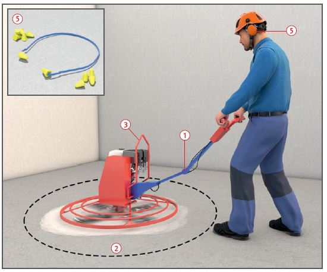
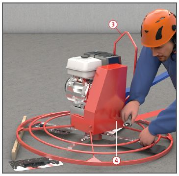
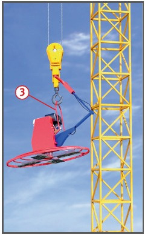

Gefährdungen
- Bei Unterschreitung des
Sicherheitsabstandes kann es
zu Unfällen durch rotierende
Arbeitswerkzeuge kommen.
- Lärm und Abgase von Verbrennungsmotoren können zu
Erkrankungen führen.
- Bei Maschinen mit Elektromotor kann es zu elektrischen
Gefährdungen kommen.
Schutzmaßnahmen
- Deichsel mit Höhenverstellung
auf Größe des Beschäftigten einstellen und abklappbare Deichsel
verriegeln
 . Sicherheitsabstand
des Bedieners ≥ 0,90 m.
. Sicherheitsabstand
des Bedieners ≥ 0,90 m.
- Schutzkorb bzw. Abdeckung
auf ordnungsgemäße Befestigung
überprüfen.
- Maschine stets mit beiden
Händen führen.
- Mit möglichst geringer Drehzahl
vorglätten.
- Im Gefahrbereich der Glättmaschine dürfen sich während
des Betriebes keine Personen
aufhalten
 .
.
- Glättflügel während des
Betriebes nur vom Handgriff an
der Führungsdeichsel aus verstellen.
Anderenfalls Antrieb
stillsetzen.
- Glättmaschine nicht auf
dem zu glättenden Material
abstellen.
- Transport der Glättmaschine
nur an den dafür vorgesehenen
Handgriffen bzw. Anschlagösen
für Hebezeugbetrieb vornehmen
 . Glättflügel bzw. -teller und
andere Maschinenteile gegen
Herabfallen sichern.
. Glättflügel bzw. -teller und
andere Maschinenteile gegen
Herabfallen sichern.
- Durchführung von Unterweisung und Einweisung des
Bedieners anhand der Betriebsanweisung in Verbindung mit
der Betriebsanleitung des
Herstellers.


Zusätzliche Hinweise
für Glättmaschinen mit
Verbrennungsmotoren
- Benzinbetriebene Glättmaschinen sind in Räumen
aufgrund der Kohlenmonoxid-Vergiftungsgefahr nicht zulässig.
In Räumen sind ausschließlich
Elektroglätter einzusetzen. In
Hallen mit Höhen über 5 m und
natürlicher Lüftung können
benzinbetriebene Glättmaschinen
mit Katalysator, dieselbetriebene Glättmaschinen mit
Dieselpartikelfilter und flüssiggasbetriebene
Glättmaschinen
verwendet werden.
- Beim Anlassen die Führungsdeichsel
mit einer Hand festhalten.
- Die Sicherheitsabschaltung,
die auf das Loslassen der
Deichsel reagiert, muss immer
funktionsfähig sein.
- Auswechseln der Glättflügel
bzw. -teller nur bei Stillstand des
Antriebsmotors
 .
.
- Gehörschutz benutzen
 .
.
Zusätzliche Hinweise
für Glättmaschinen mit
Elektromotoren
- Glättmaschinen nur über
besondere Anschlusspunkte
betreiben, z. B. Baustromverteiler
mit FI-Schutzeinrichtung
(RCD).
- Vor Beginn der Glättarbeiten
Drehrichtung der Werkzeuge
prüfen.
- Vor Auswechseln der Glättflügel bzw. -teller Netzstecker ziehen.
- Elektrische Reparaturen nur
von Elektrofachkräften ausführen lassen.
Prüfungen
- Art, Umfang und Fristen erforderlicher
Prüfungen festlegen
(Gefährdungsbeurteilung) und
einhalten, z. B.:
- vor jeder Arbeitsschicht auf
augenscheinliche Mängel,
- nach Bedarf, mind. 1 x jährlich
durch eine „zur Prüfung
befähigte Person“ (z. B. Sachkundiger).
- Ergebnisse der regelmäßigen
Prüfung dokumentieren.
Arbeitsmedizinische Vorsorge
- Arbeitsmedizinische Vorsorge
nach Ergebnis der Gefährdungsbeurteilung
veranlassen (Pflichtvorsorge)
oder anbieten (Angebotsvorsorge).
Hierzu Beratung
durch den Betriebsarzt.
07/2021